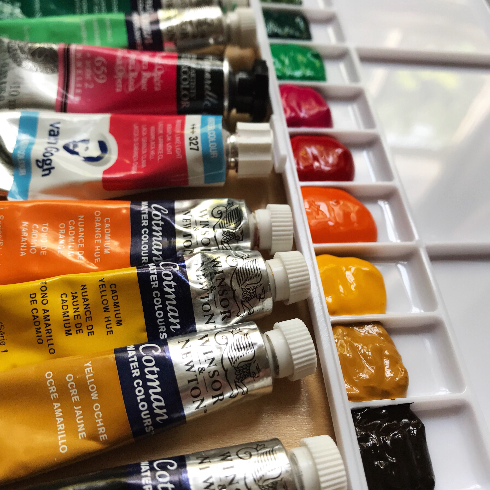

Watercolor Palette Prep
The endless color selection of tube watercolor paints makes them so enticing, but carrying them around can be a little too much sometimes. Learn how to put your favorite colors into your own watercolor palette here!